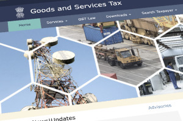

Focus on what you are the best at. We'll take care of the systems to support your
Venture.
At Koshy & Co Chartered Accountants, we provide Assurance and Advisory Services, to enhance our
Clients'
opportunities and to mitigate Operational, Financial, and Regulatory Risks. ➔
Services
Domain
Creative Media
Accounting and Taxation in TV, Film, and Media, need to be carefully understood to achieve operational
efficiency. Our expert team will provide you the guidance for achieving discipline in Tax
Compliance. We provide a comprehensive accounting approach and taxation guidance for individuals
and organisations in the Media Industry, including actors, entertainers, and sportsmen, in front of the camera,
and a wide range of roles involved in logistics, behind the camera.
Domain
Startups
Starting up a new business has never been an easy task. The most important aspect
is to
identify business goals. Once those have been defined we can assist you to achieve these
goals.
Your business plan should provide a basis for the strategy to achieve the goals. We can help
you
develop
clear goals and objectives and complete business plan to arrange the financing approval.
Service
Accounting Solutions
Changing or shifting Regulatory environment, multitudinous transactions,
and lack of experienced Finance and Accounting Professionals, strain the capabilities
of many Finance functions. The risk of errors is typically higher during the adoption
of new accounting policies, systems and new regulatory compliances. Our Accounting Services
team proactively monitors new accounting rules, alerts clients to changing requirements and
offers training for addressing Accounting or Reporting challenges.
Service
Advisory & Compliance
Improving business performance through Operational, IT, and Financial Audits,
developing strategies and enhancing value are at the core of what we do.
Transactions should focus strategic priorities, and at the same time,
cash flows should be optimised. Merger risks should be mitigated and tax obligations
should be thoroughly planned for. Our cross-functional team’s experience in various Industries,
Business operations and Corporate lifecycle events, help our Clients become stronger and more resilient.
Service
Audit & Assurance
We provide independent audits, under the respective laws, in line with the Standards on Auditing
issued by the Institute of Chartered Accountants of India. Our audit team is trained to maintain
the utmost level of objectivity, independence, confidentiality, ethics, and integrity. Our methodology
is disciplined and focussed to optimise for Quality.
Service
Corporates & Taxation
For enhancing growth and success opportunities, it is important for Corporates to understand
and comply with the Indian Tax and Regulatory Policies. Similarly, Indian Businesses planning
to go global need to understand Cross-Border Taxes and Regulations. Taxes are an important element
influencing business strategies, and upfront advice can help attain tax efficiency. We offer taxation
insights, solve tax complexities, and help assesses - including Companies and Individuals, to make better
informed decisions regarding Tax Planning and Investments. We provide advice on NRI Taxation and FEMA Compliance.
Service
Fraud Risk Assessment
Assessing, developing, and establishing an appropriate framework to identify and respond to
the vulnerabilities are critical for any Business. Irregularities being undetected can lead to Financial,
Reputational, and Legal risks. Control environments should be developed with due care, that the cost
of developing the controls should not exceed the cost of risks. Our Fraud Risk team assesses the fraud risks
and the associated framework for identifying the program shortcomings and remediate critical programs in
consultation with subject matter experts.

Service
Indirect Taxes
Goods and Services Tax (GST) compliance requires constant monitoring, and incremental changes
in business systems and processes. We assist businesses to effectively mitigate the costs and
risks of non-compliance. We provide assistance in dealing with the compliance aspect, and pending
tax and litigation matters related all indirect tax laws including GST, Customs Duty, and Foreign Trade Policy.
Service
Internal Audit
With the ever evolving Business and Regulatory environment, Organizations face emerging risks that
challenges prevailing strategies and systems. Resilience is the key to organizational sustenance,
and Businesses need to achieve a balance of Governance, Risk Management, Regulatory Compliance, and Performance.
Our Internal Audit and IT team brings a combined effort to provide better information for decision-making,
including streamlining the systems and processes. Our cross-functional team improves visibility into risks,
and enables Clients to respond with agility and sure-footedness in the future.
About Us
At Koshy & Co Chartered Accountants, we provide Assurance and Advisory
Services, to
enhance
our
Clients' opportunities and to mitigate Operational, Financial,
and
Regulatory Risks. We support our
Clients
in complying with Statutory Audit, and Audit under Fiscal
Laws. We
help
them manage the Regulatory Risks
under GST Acts, Income Tax Act, Companies
Act,
and
similar statutes. Our clients stay ahead with a clear
understanding of the Financial and Regulatory changes that impact their Business.
A zealous commitment to Quality, augments the value of services we provide for our Clients. This
aids
them
in extracting greater efficiencies through improved Technology and Business Processes. We strive
to
ensure
that all our Services are undertaken in an environment of the utmost level of Objectivity,
Independence,
Integrity, and Ethical standards. The Team serves Clients primarily from Banking, Entertainment
&
Media,
Insurance, Manufacturing, Retail and Service Industries.
CA Titus Koshy, a Chartered Accountant proficient in Assurance, Advisory
Engagements
and
Tax
Consultancy,
heads the Firm. He is a Certified Information Systems Auditor (CISA), and has
secured
ICAI's
Certificate
Courses on Concurrent Audit of Banks, and Forensic Accounting & Fraud
Detection. Along with Titus, the
core
team is built around Jithin John, who is semi qualified in Chartered
Accountancy,
Alex K, managing the Information Systems (IS) Audit wing, and
Issac K, Certified Internal Auditor (CIA), heading
the
Internal Audit team.
Contact
Get in touch
Office Location
Koshy & Co Chartered Accountants
No. 27/2957A1 K P Vallon Road
Kadavanthra Ernakulam Kochi - 682020
Kerala